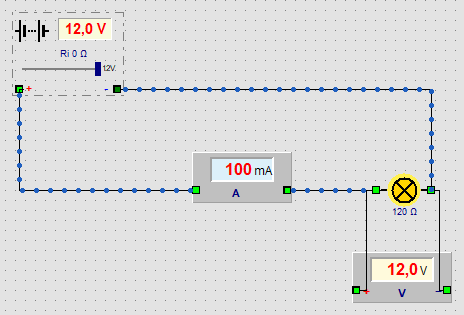

Start simulation.
Start simulation.Learning path › Starting from energy › Lesson 1 of 5 · Level: Basic
Think of a fountain in a pond. A pump pushes the water up through a pipe. The water flows through a water wheel and makes it turn: that is where the energy is used. Then the water flows back to the pump, and it starts again. The water does not run out: it goes round.
An electric circuit works the same way. The source pushes, the wires carry the current, and the lamp uses the energy to make light and heat.
| Water | Electricity | Unit |
|---|---|---|
| the pump | the source (a battery) | |
| how hard the pump pushes (the pressure) | the voltage U | volt (V) |
| how much water passes per second | the current I | ampere (A), or milliampere (mA) |
| the pipe | the wire | |
| the water wheel | the lamp (the load) |

In the example the electrons are switched on: the blue dots in the wires. That way you see the current move, like the water in the pipe. They run from the − terminal of the source, through the lamp, to the + terminal. The milliammeter counts how much current passes, the voltmeter measures the voltage across the lamp.
Start simulation.Fill in: the higher the voltage, the ... the current and the ... the lamp. Why do the electrons stand still at 0 V? What would that be at the fountain?
The higher the voltage, the larger the current and the brighter the lamp: at 12 V, 100 mA flows, at 6 V only 50 mA. At 0 V the source no longer pushes: no current flows and the lamp is off. At the fountain that is a pump that has stopped: the water stands still and the water wheel does not turn.
Slide the voltage below and look through the magnifying glass into the copper wire.